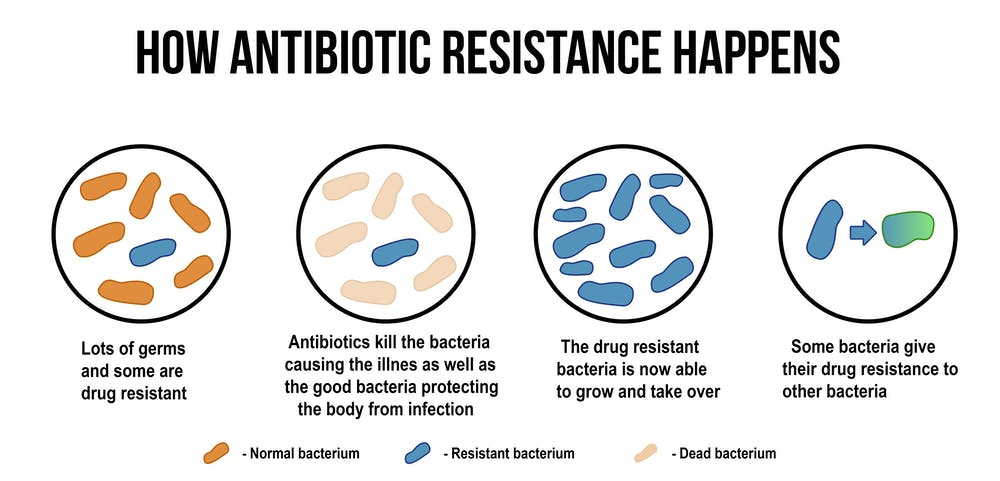

MICROORGANISM

How
antibiotic resistance
usually happens
Let's look at some ways How
antibiotics resistance usually happens
.
some bacteria give their drug resistance to other bacteria
due to continuously exposer of bacteria to antibiotics even when unnecessary